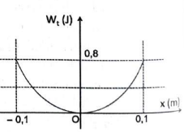
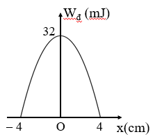
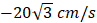
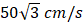

PHẦN II. Câu trắc nghiệm đúng sai
Trong mỗi ý a), b), c), d) chọn Đúng hoặc Sai. Đúng 1 ý: 0,1 · 2 ý: 0,25 · 3 ý: 0,5 · 4 ý: 1,0 điểm.
1
Một vật nhỏ có khối lượng 400 g dao động điều hòa dọc theo trục Ox. Đồ thị hình bên mô tả sự thay đổi thế năng $W_t$ của vật theo li độ x. Xét tính đúng/sai trong các phát biểu sau:

a) Biên độ dao động của vật là 10 cm.
b) Thế năng cực đại của vật là 0,8 J.
c) Tần số góc của vật là $\frac{10}{\pi}$ rad/s.
d) Động năng cực đại của vật là 0,4 J.
2
Một con lắc lò xo gồm vật khối lượng 200 gam đang dao động điều hoà. Hình bên là đồ thị biểu diễn sự phụ thuộc của động năng $W_đ$ của con lắc theo li độ dao động.

a) Cơ năng dao động của con lắc bằng 32 J.
b) Tốc độ cực đại của vật dao động là 56,5 cm/s.
c) Biên độ dao động là 4 cm.
d) Tại $x=2$ cm, thế năng của vật: $W_t=16$ mJ.
3
Một con lắc lò xo gồm vật nhỏ và lò xo có độ cứng 20 N/m dao động điều hòa với chu kì 2 s. Khi pha của dao động là π/2 thì vận tốc của vật là

. Lấy π² = 10.a) Cơ năng của vật tỉ lệ thuận với bình phương biên độ.
b) Động năng và thế năng chuyển hóa qua lại lẫn nhau.
c) Tốc độ cực đại là

.d) Khi vật đi qua vị trí có li độ $3\pi$ (cm) thì động năng của con lắc là 0,03 J.
4
Một con lắc lò xo có khối lượng vật nặng m = 1 kg, dao động điều hoà với chu kì T = 0,2π (s), biên độ dao động bằng 2 cm.
a) Độ cứng của lò xo là 100 N/m.
b) Trong quá trình dao động thì cơ năng của con lắc biến thiên điều hoà theo thời gian.
c) Cơ năng của con lắc là 2 mJ.
d) Động năng của con lắc ở li độ 1 cm là 0,15 mJ.
5
Đồ thị hình 3.4 mô tả sự thay đổi động năng theo li độ của quả cầu có khối lượng 400 g trong một con lắc lò xo treo thẳng đứng.

Hình 3.4. Đồ thị mô tả sự thay đổi của động năng theo li độ của quả cầu trong con lắc lò xo thẳng đứng.
Hình 3.4. Đồ thị mô tả sự thay đổi của động năng theo li độ của quả cầu trong con lắc lò xo thẳng đứng.
a) Biên độ dao động của con lắc là 4 cm.
b) Từ đồ thị ta thấy $W=W_{đmax}=80$ J
c) Tốc độ cực đại của vật dao động: $v_{\mathrm{max}}=\frac{\sqrt{10}}{5}$ (m/s)
d) Tại $x=2$ cm, thế năng của vật: $W_t=20$ mJ.
6
Một con lắc lò xo dao động điều hòa với biên độ 10 cm. Đồ thị biểu diễn mối liên hệ giữa động năng và vận tốc của vật dao động được cho như hình vẽ. 
a) Vận tốc cực đại của vật là 200 cm/s.
b) Chu kỳ dao động của con lắc là 1 s.
c) Độ cứng của lò xo là 40 N/m.
d) Li độ của vật khi vật có động năng gấp 2 lần thế năng là 5 cm.
7
Một vật dao động điều hòa với tần số 2 Hz, biên độ A = 10 cm.
a) Khi pha dao động là π/3 thì li độ của vật là x = 5 cm.
b) Khi vật có li độ  thì tốc độ của vật là $20\pi$ cm/s.
thì tốc độ của vật là $20\pi$ cm/s.
thì tốc độ của vật là $20\pi$ cm/s.c) Cơ năng của vật là 0,4 J nếu m = 1 kg. Lấy $\pi^{2} = 10$.
d) Động năng của vật biến thiên với tần số là 2 Hz.
8
Một con lắc lò xo gồm vật nhỏ có khối lượng $m$ và lò xo có độ cứng 40 N/m đang dao động điều hòa với biên độ 5 cm.
a) Trong quá trình vật dao động cơ năng của vật được bảo toàn.
b) Cơ năng của vật có giá trị là 0,032 J khi vật qua vị trí có li độ là 3 cm.
c) Động năng của vật có giá trị là 0,032 J khi vật qua vị trí có li độ 3 cm.
d) Nếu giữ nguyên khối lượng của vật và thay đổi lò xo có độ cứng tăng lên 2 lần mà vẫn giữ cho vật dao động có biên độ 5 cm thì cơ năng của vật tăng lên 2 lần so với ban đầu.